This article collects the basics of TCP protocol. Its friend UDP (transport layer protocol as well) is faster but less reliable.
Segment structure
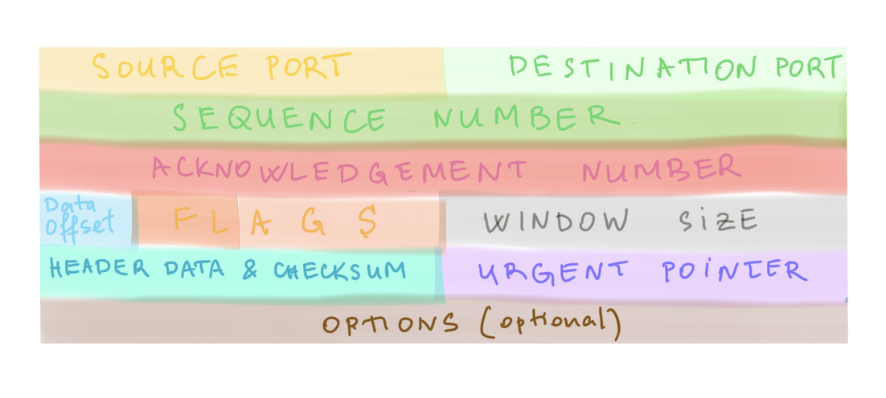
Intro
The desired prerequisite for this article is this. It’s also recommended to read about data structures. A very good book that I’ve accidenatlly stumbled upon is Brian Carrier’s File System Forensic Analysis [3]. I also strongly believe, that the best way to learn is to activate different parts of the brain. Simple reading is not enough, that’s why I’m trying to mix in pictures and emoji. Also, metaphors help and analogies which I also try to provide. But it would really help, if you installed some packet capture program (Wireshark is an example), opened some network interface and observed the stuff I’m talking about yourself.
Off we go ✈️.
This part is probably the easiest one to explain. One PC 💻 can communicate with many other PCs simultaneously. To be precise, different applications on a same PC can communicate with their servers or other PCs at the same time. For example, a user is running Facebook app 🌅 and some application for work, for example, Excel, at the same time (😬 oops). Facebook is reading feed from the server, while Excel is synching with the Cloud 🌩.
How does the NIC (network card of the PC) distinguish between the packets?
The answer is simple serial numbers aka port number. PC assigns Excel port #1 and Facebook to port #2.
A few minutes have passed… ⏲️
Both applications receive a response 📨 .
But how to tell, which one goes to which application?
The first message has port #1 written on the envelope ✉, and the second - port #2. So, when an application sends a request, it is asssigned a port. Roughly speaking, a port number identifies an application that is using the network 🕸️.
Some applications have their “favourite” ports, which are usually assigned to them (like, ssh is usually at 22, and ftp 21, and web 80 or 8080). Even some malware 🕷️ applications have prerferences. But whatever the preferences are, a user can usually change them.
We are arriving 🚋 and I hope you’ve read about data structures, but in case you have not or in case this knowledge has not yet settled… In a word, computers only see an almost endless sequence of 1s and 0s. A data structure difines how a PC interprets this or that sequence of 1s or 0s. If you tell a computer 💻 PC that 01000001 is an integer, it will show you 0x41 in hex editor. If you tell a computer that 01000001 is an ASCII letter, it will output A. If you, for example, tell a computer that these are TCP flags, it will interpret them as ECN-Echo and FIN flags 🎏 set and etc (I hope you get the point). So, TCP header is just another data structure that tells a PC how it should interpret and use these particular sequence of bits (1s or 0s).
Now, about TCP header. TCP is just one of the headers that you message ✉ sent over the network 🕸️ has to provide in order to be delievered. You can read about this in my article here. Its main purpose (as pointed out above) is to specify the port (i.e. application or process) that this message should be delievered to. All other things it provides are secondary. For example, it can so, to say, ensure data integrity. I’ve marked TCP header on the screenshot below with purple curly brackets. The upper curly bracket shows the TCP header after being enterpreted by Wireshark and the below one (highlighted in blue as well) - raw bytes (before being interpreted by Wireshark): ea a3 01 bb 69 10 a9 e2 a0 71 33 51 50 10 0f ed 1e b9 00 00. Yes, that’s it, 20 bytes is the length of a TCP header (if an optional field Options is not filled out). And these 20 bytes tell so much!
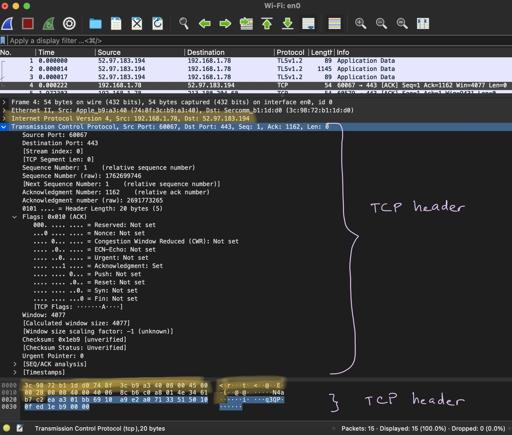
Source Port
The first two bytes are eaa3. These bytes are to be interpreted as a decimal value (60067) and stand for the source port. You can use a converter online (for example, here). Now check the Source port: field value (bytes as they were interpreted by Wireshark) on the screenshot below - 60067 as well! Amazing 🤩!
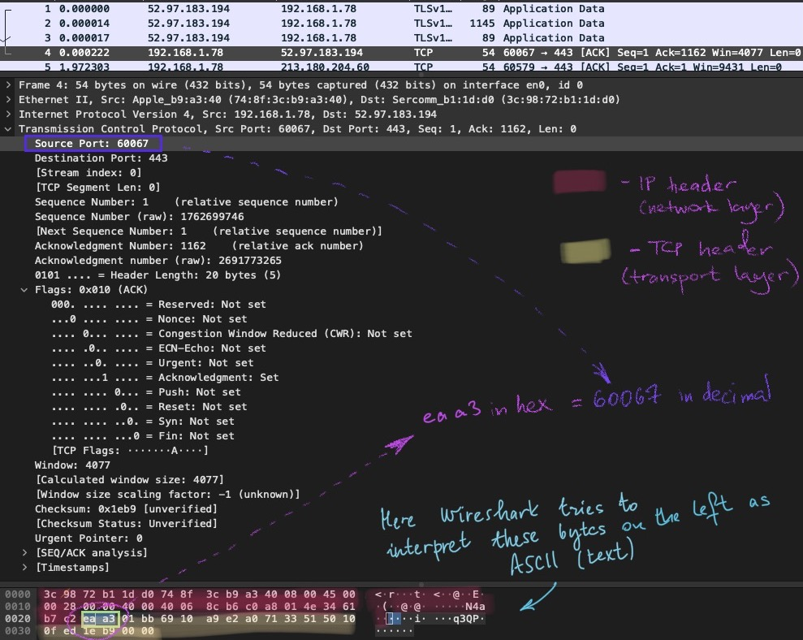
Note, that on the lower part of the window there are some weird-looking letters t, q3QP etc. They don’t make sense, do they? Well, they should not, at least. If they do, having a good rest is strongly suggested 🏥. Wireshark attempts to interpret these bytes as ASCII characters aka text (remember abut data structures above? This is a good example when the wrong one is used). Since this is a TCP header and not text, the result is total garbage. You might ask why Wireshark is doing that? Well, the reason is probably because on other layers this functionality is handy and it was tedious to turn it off for this field. Besides, who knows, may there is some covert channel here… . But I’m getting off the topic.
Destination Port
Now, let’s take the next 2 bytes: 01bb. Let’s use the same hex-to-decimal converter here to figure out the decimal value - 443. Check against the Wireshark’s interpretation below (value highlighted in yellow):
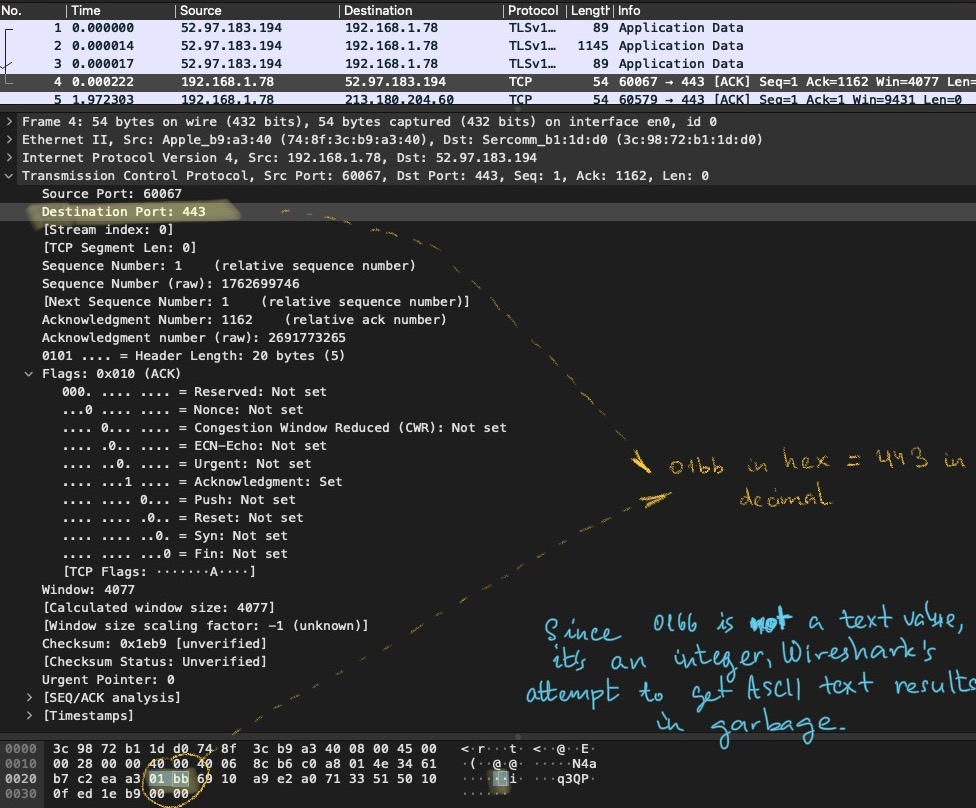
Bingo 🎉 ! Remeber me writing about favourite port numbers? Well, 443 is an indisputable darling of SSL/TLS (secure version of HTTP used to browse websites). You can read more about it here.
Sequence number
The next four bytes are a bit harder to explain, but I will try 😊. As the paragraph’s title states, we are going to talk about sequence numbers. Since TCP was developed in order to ensure that no data is lost in transit, there must be a way to track parcels 📦. What can be easier than put a number on each package 📦?
For example, Marge needs to send 10 packages to Homer. She numbers all packages from 1 to 10.
Now, let’s assume the following option. Marge sends them in turn: 1 📦-> 2 📦-> 3 📦-> 4📦 -> 5 📦-> 6 📦-> 7 📦-> 8 📦-> 9 📦-10📦. What happens if Homer receives them like this: 1 📦-> 2 📦-> 3 📦-> 4📦 -> 6 📦-> 7 📦-> 8 📦-> 9 📦-10📦 Well, Homer detects (hopefully 🙏 ) that the fifth packages 📦 is missing and asks to resend it.
Everything is fine, until for some reason, packets come in the wrong order. Homer will have to wait until Marge stops talking and then check that there are no “gaps”. That’s time-costy, it would be much better to be able to detect missing packages before the connection is closed. But that not the only problem.
Imagine, Homer receives these packages in the right order: 1 📦-> 2 📦-> 3 📦-> 4📦 -> 5 📦-> 6 📦-> 7 📦-> 8 📦-> 9 📦 . He didn’t know that there were supposed to be 10 packages in total. He might notice the mistake if he then opens them all and finds something in the wrong state.
The best solution to track packages 📦 and to detect errors 🛑 right away is for Marge to send a package along with the number of the next package. For example, 1 📦 (the next is 2)-> 2 📦 (the next is 3)-> 3 📦 (the next is 4)-> 4📦 (the next is 5) -> 5 📦 (the next is 6)-> 6 📦 (the next is 7)-> 7 📦(the next is 8)-> 8 📦 (the next is 9)-> 9 📦 (the next is 10)-10📦 (it’s the last).
The problem with this scheme is that these numbers are predictable and someone malicious might interfere and substitue a legitimate package 📦 with his/her package 🕷️📦. Consider this scenario:
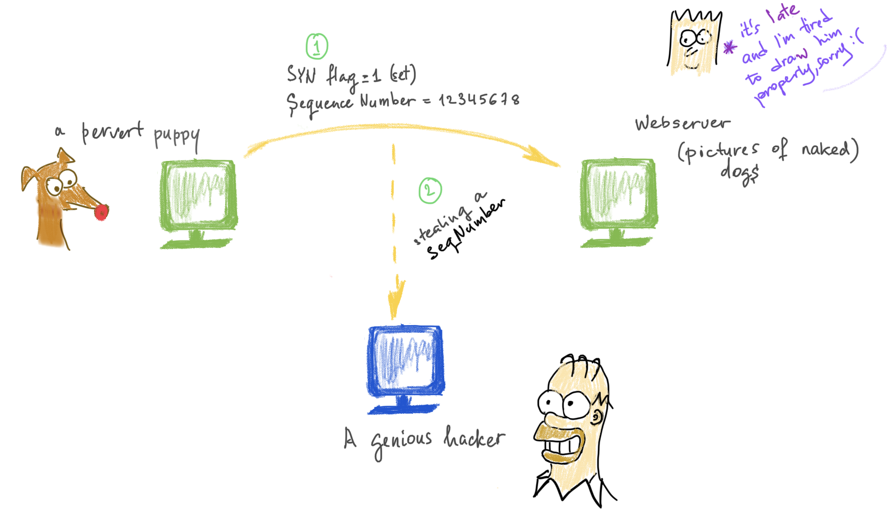
- A pervert puppy 🐕 (don’t judge the puppy) wants to get a picture of naked dogs from the server (arrow #1) and after establishing the connection, the server sends the first picture to the puppy with a sequence number 1.
- A genius hacker has been listening and now knows that the next sequence number is
2. - To prevent the server from sending the second picture, he keeps it busy with requests and meanwhile sends a picture with number
2on it to the pervert puppy 🐕 . And on this picture, oh horror! Let’s not tell. Now puppy will wait until his 18-21 year to look at the naked ladies.
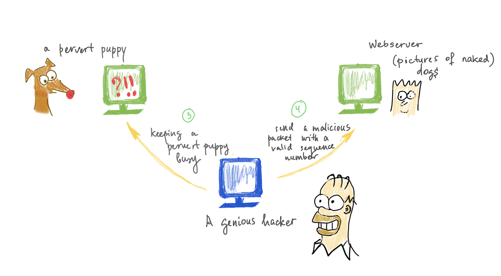
When the servere is finally free and ready, it, of course, might send the pictire 2 (the one originally requested by the puppy), but since the puppy has already received picture #2, he’ll ignore it.
That’s why these sequence numbers are supposed to be unpredictable or at least very hard to predict. On Windows machines they were just incremented by one after the first sequence number was generated for the connection. That’s why the attacker only had to intercept one request to calculate the next sequence number.
See the screenshot below for an example from the wild 🐅 :
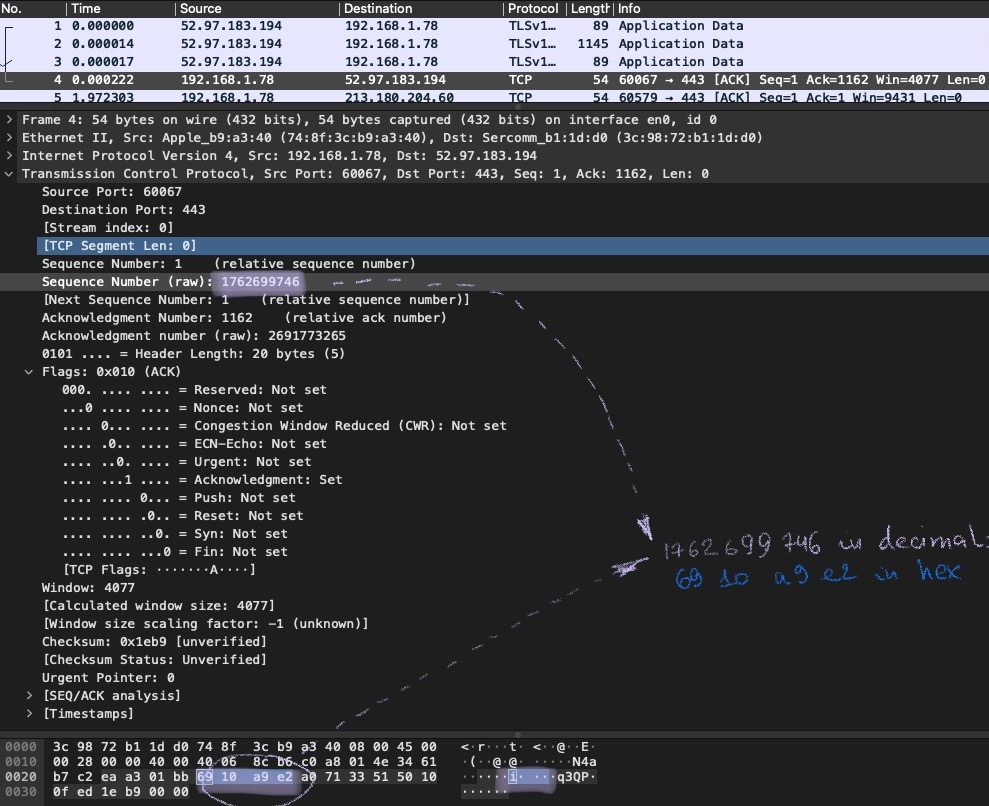
So, to summarize, sequence numbers are like tracking number used by postal services. It tells what is the next package’s number is supposed to be. That helps both parties to synchronize with each other.
Acknowledgement number
An acknowledgment number simply shows, what is the sequence number of the next segment that is expected by the receiver. It’s like saying: I have received your segment #1 and I know that since the numbers increment by one, the next is supposed to be #2. I’m incredibly smart…. 🤓.
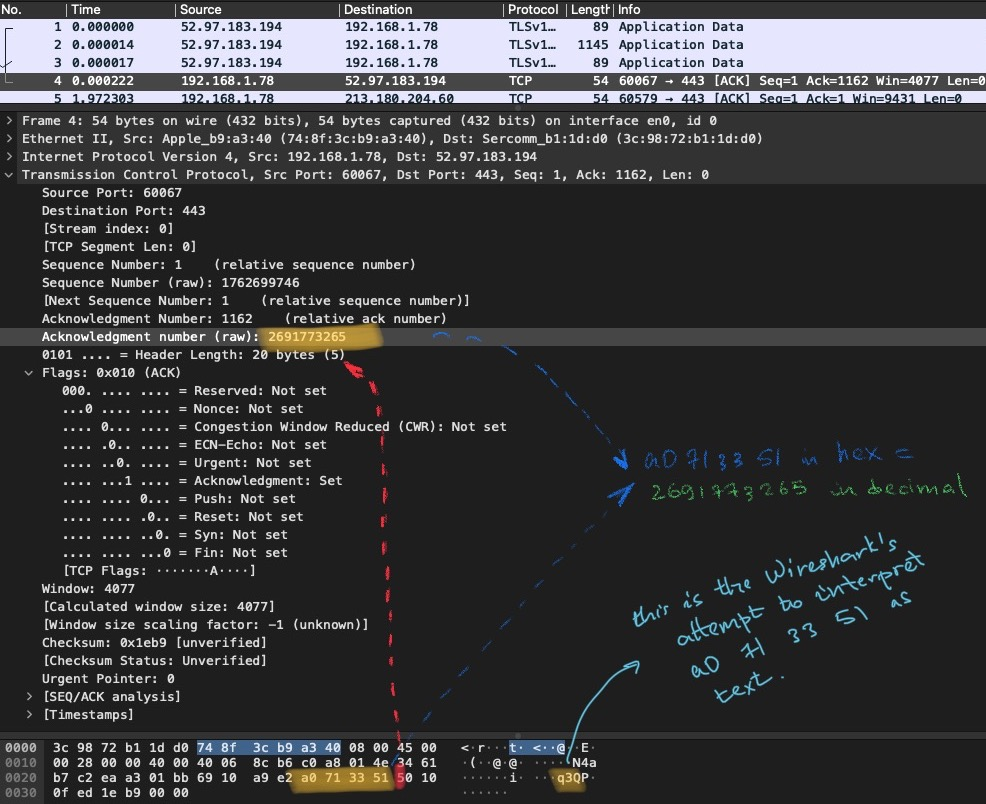
Data Offset aka Header Length
If no Options at the end of the header are specified, its length is always 20 bytes. The value specified in this case (5) needs to be multiplied by 32 and divided by 8 to have bytes. The formula is: x * 32 / 8.
Reserved + Flags
There were 9 flags there. Each flag can be either 1 or 0 thus occupying precisely 1 bit. For 9 flags we need exactly 9 bits. Probably, just in case, this field is extented to 12, that’s why the first 3 bits are marked as reserved. May be, it looked weired to allocate 9 (uneven number) of bits to this. Who knows, as they say, who knows.
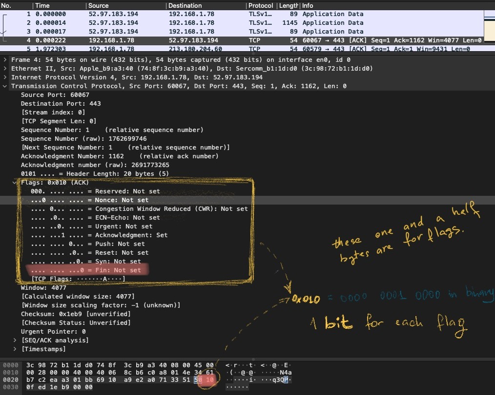
Below is the list of possible flags and what they are for (if I understood it correctly myself 😝).
SYN
Wireshark filter to see all segments that have this flag set: tcp.flags.syn==1. To see packets that both have SYN and ACK (TCP handshake, last step): tcp.flags.syn==1 && tcp.flags.ack==1 && tcp.len==0.
ACK
Wireshark filter to see all segments that have this flag set: tcp.flags.ack==1.
PUSH
Wireshark filter to see all segments that have this flag set: tcp.flags.push==1.
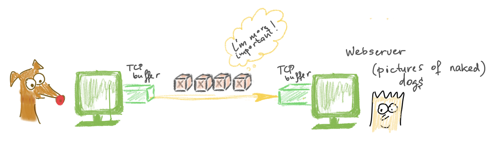
URG
Wireshark filter to see all segments that have this flag set: tcp.flags.urg==1. This flag is not too frequent to encounter. I only managed to capture it when I crafted it myself with python scapy module from terminal:
ip = IP(ttl=10, dst='192.168.1.1', src='192.168.1.2')
tcp = TCP(flags='U',dport=1, sport=2)
send(ip/tcp)
Or using a script:
from scapy.all import *
send(IP(dst="192.168.1.1", src="192.168.1.1")/TCP(dport=1, sport=2,ack=1, seq=2, flags='U'))
In the artile [17] the author states that he mamanged to observe these segments when using telnet. Also, it’s stated that this mechanism is deprecated in RFC 6093 (but I have not confirmed this statement).
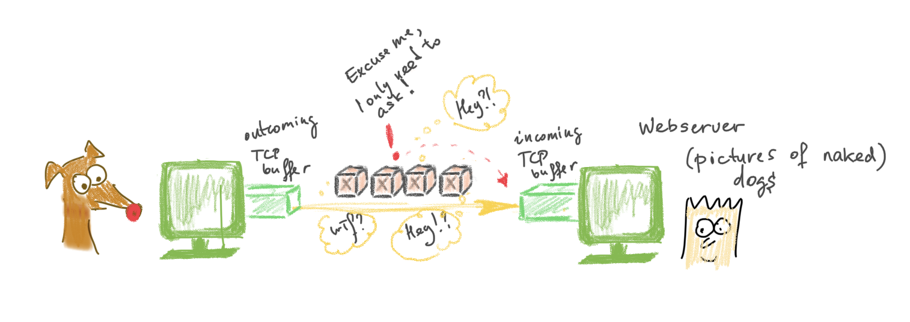
RST
Wireshark filter to see all segments that have this flag set: tcp.flags.rst==1.
FIN
Wireshark filter to see all segments that have this flag set: tcp.flags.fin==1.
Window Size
Let’s imagine that Marge wants to send a 24Kb picture 🖼 to Homer. She sends this whole picture over the wire. It takes some time to be fully delievered and in the end Homer calculates the checksum. But the cheksum he has calculated and the one, put in the TCP header by Marge, are different! O-la-la! Marge resends this picture, but it still gets corrupted 😞.
The above process is time and bandwidth consuming and that just won’t do! How many time does Marge have to resend a 24Kb picture before it gets safely to the other end?! And what if it were a video over 1Gb large?
Marge is smart and dicides to divide this picture into 3 parts 🍕, each 8Kb in size. Homer ACKs to the first 2 but doesn’t ACK to the last one. Marge now knows that the problem is the last 8Kb and resends them. Homer doesn’t ACK (what the heck is he doing?). Marge then divides these 8Kb into 16 smaller pieces 🍕, each piece is now 512 bytes. Homer ACKs to all of them except the 12th. Marge knows, that the 12th 512bytes of the picture’s last fragment is the problem and resends only this part. Homer ACKs and everyone is happy 🎊.
So, Marge has cut down the size of the segment to resend from 24Kb to 512 bytes, which is much better since we don’t occupy so much bandwidth for this single operation and it was easier to locate the problem segment. The smaller the piece 🍕 is, the smaller the segment to resend is and the quicker the corrupted data can be restored.
But we cannot cut it down to 1 byte for each segment, that would also not help in speeding up the process, since our headers occupy 40bytes at least and that would mean 1/41 only is for data… . That’s why IETF (Internet Engineering Task Force) has wisely calculated the recommended size for such a unit.
Maximum Segment Size is the maximum…. well… segment size 😊. That’s exactly what we were just talking about. A unit of information for TCP protocol is a segment, as you might recall. That includes the TCP header + the actual data. According to RFC [6], if the client doesn’t tell how much it can digest at a time, the default value is 536 bytes (minimum packet size 576 minux 20 bytes for IP header and minus 20 bytes for TCP header). So, 536 bytes of actual data (for example, a picture, or a webpage).
But we have to take two things into account.
Firstly, we have to acknowledge every portion 🍕. What if there were 19 segments sent? The client would have to send 19 ACKs in return. So much waste of bandwidth… .
Secondly, when a segment is received, it’s not processed right away, it’s waiting its turn in the TCP outgoing buffer 📨 (of the sender) and then in the TCP incoming buffer 📨 (of the receiver). This buffer also cannot be stuffed infinitely with data.
That’s where windows size comes into play. Look at the screenshot below:
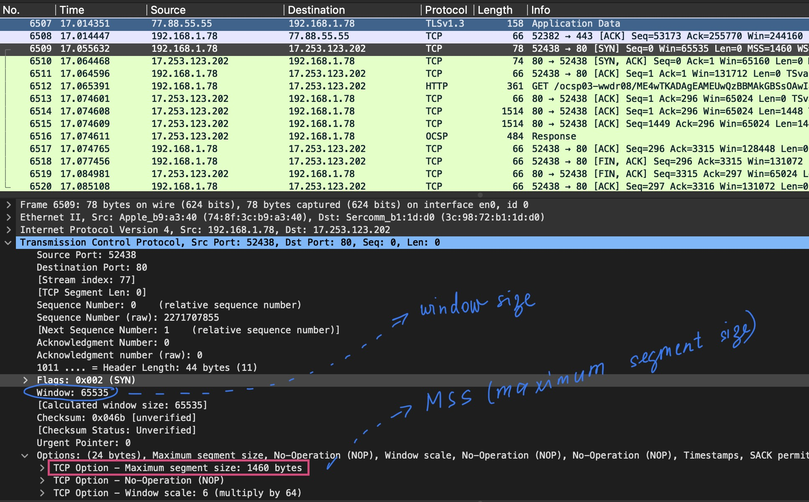
I’ve marked window size with blue - 65535 bytes it’s the maximum value. Why? This field is only two bytes long and that’s why the biggest possible number is 0xFFFF which is 65535 in decimal. Homer specifies the window size, Marge sends this amount of data and only after data within this window size was received, Homer will ACK.
If there were no window size value, this is how it would look like:
- Homer 🌯 <- seg #1 Marge 👩🍳
- Homer 🌯->
ACK num2 Marge 👩🍳*(“Marge, I’ve received segment #1 give me the 2nd”)* - Homer 🌯<- seg #2 server Marge 👩🍳
- Homer 🌯->
ACK num3 Marge 👩🍳*(“Marge, I’ve received segment #2 give me the 3rd”)*
And this is how it looks like with Window size (if Window size holds up to two segments):
- Homer 🌯 <- seg #1 Marge 👩🍳
- Homer 🌯<- seg #2 server Marge 👩🍳
- Homer 🌯->
ACK num3 Marge 👩🍳 (“Marge, I’ve received segments #1 and #2, give me the 3rd”)
But the technologies don’t stay still, we have larger files and we have quicker PCs, so 64Kb was not enough over time. That’s why TCP Options field was introduced with its Maximum segment size. If the client wishes, they can specify this option with every SYN segment sent (a segment, where SYN flag is set). On the screenshot above I’ve marked the TCP Option - Maximum segment size: 1460 bytes. That means, that Homer can digest 1460 bytes at a time (instead of the default 536).
Checksum
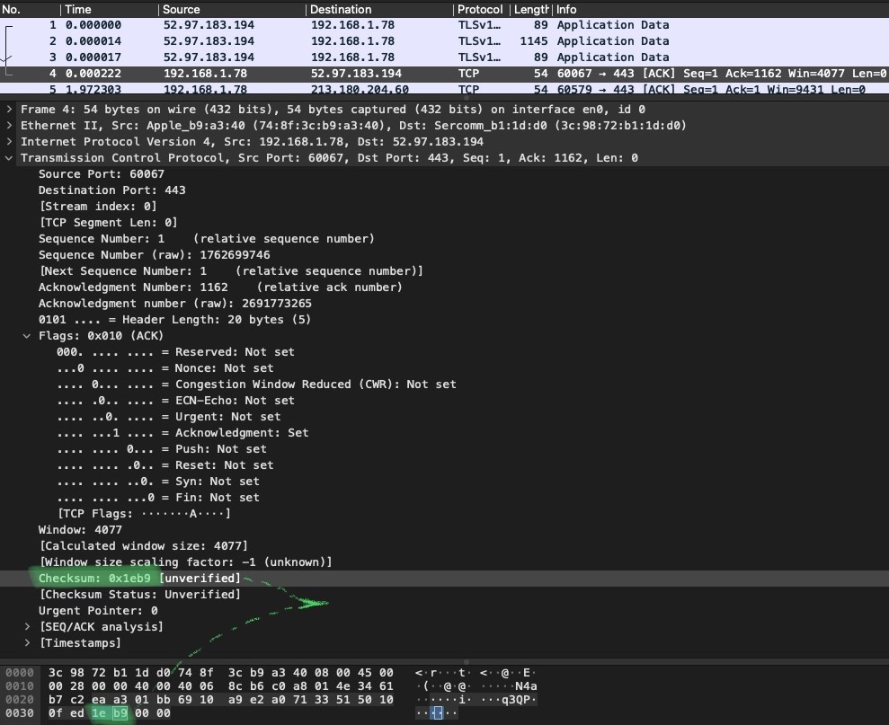
Urgent Pointer
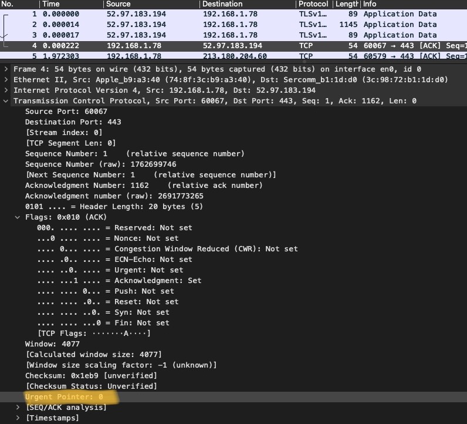
This one is tricky… . Seems that none really understands what it’s for and how to use. That’s probably the reason, why it so hard to capture.
The urgent pointer points to the sequence number of the octet following the urgent data.
Another peculiar statement in RFC:
The TCP urgent mechanism is NOT a mechanism for sending “out-of-band” data: the so-called “urgent data” should be delivered “in-line” to the TCP user.
TCP handshake
Let’s return to the pervert puppy. Before he was scared off by this hideous picture, he used to visit this El Barto website quite often. Let’s dissect one of these sessions. At this moment no data is being sent. It’s just the connection establishment.
The pervert puppy comes up with an initial sequence number (ISN). For the simplicity sake I’ll choose a very small one, when in reality they are a little longer (as was shown in this article before).
Say, the puppy 🐕 came up with the number 10. He sends this number and sets the SYN flag.
The server receives this sequence number and now knows, that the next segment it will receive will have the number 11. Also, the server comes up with his own ISN. For example, 100. The server sends his sequence number 100, along with the client’s next expected sequence number specified as an acknowledgment number and sets both SYN and ACK flags.
The pervert puppy receives the response. It first increments El Barto server’s sequence number by one. This is going to be his acknowledgment number which indicates that the next segment from the server should have the sequence number 101. Then, the puppy increments its own sequence number by one (11). This is his new sequence number. He also sets the ACK flag and sends this all to the El Barto server.
El Barto server is expecting sequence number 11 from the pervert puppy and it gets this very number, so everything is in order, the connection has been established and the pictures can be finally transferred. The server enters a listening state and waits for the request: Which picture do you want?, - it asks.
To be brief, if x is the ISN (initial sequence number) of the client, and y is the ISN of the server, then the process looks like this:
- client -> server:
SYN,SEQ= x; - client <- server:
SYN+ACK,SEQ= y,ACKN= x+1 - client -> server:
ACK,SEQ= x+1,ACKN= y+1
Exchanging data
So, the pervert puppy 🐕 is changing neither sequence nor acknowledgment numbers. It only “copies” the previous header and adds some data to it. The data part is an HTTP GET request. So, the last step from the list above is repeated with data attached:
- client -> server:
ACK,SEQ= x+1,ACKN= y+1, data 📃
Observe the below two pictures: the first one shows the ACK segment from the client (note the sequence 2271707856 and acknowledgment 2307963123 numbers).
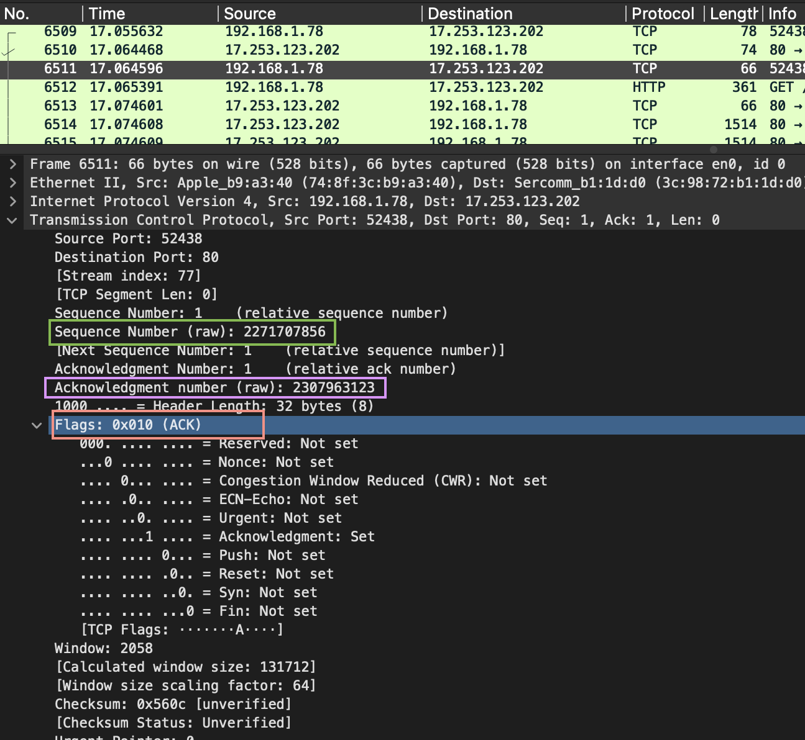
The second picture shows the first segment with data (the sequence 2271707856 and acknowledgement 2307963123 numbers are the same and the ACK flag is still set):
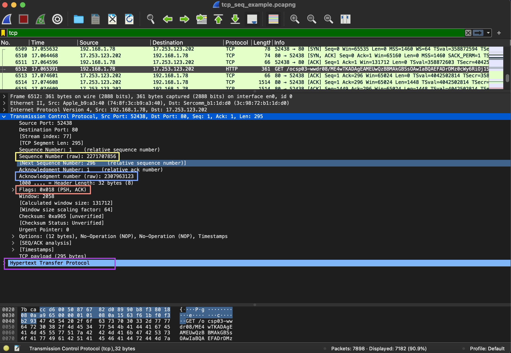
In the picture above I’ve also marked HTTP protocol part (putrple). It’s not expanded because for this discussion its contents is irrelevant. I’ve marked it to show, that though the TCP headers are almost the same, there appears a new layer - application layer, i.e. the data it all was meant for. So, the client requests something using HTTP protocol.
Diagram from RFC 793 [2]:
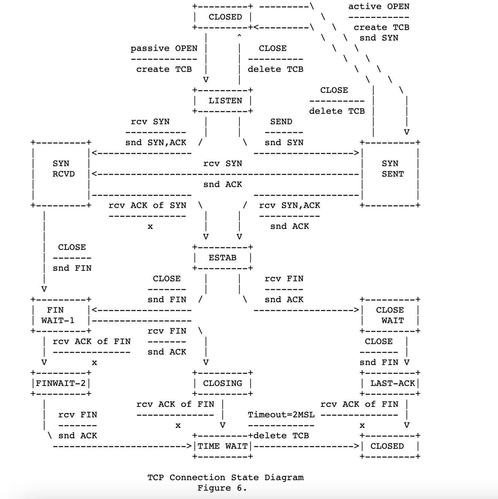
Here is WinAPI that handles TCP connections:
Four-way Handshake
That’s how the connection is terminated.
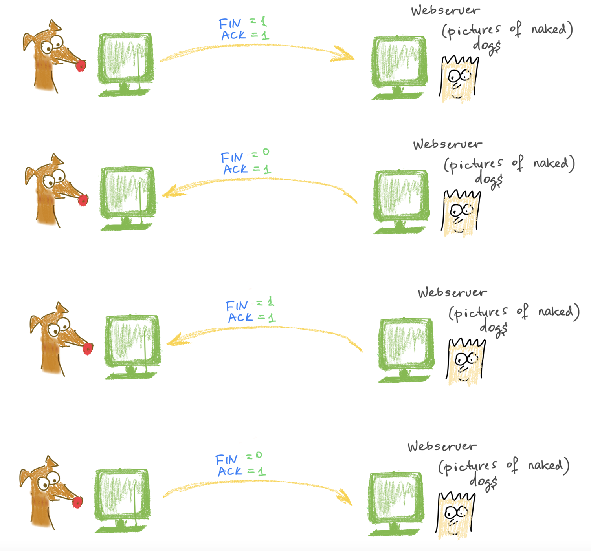
Attacks
TCP session hijacking
References
[1] TCP split-handshake attack, pdf document
[2] RFC 793 about TCP protocol and TCP handshake
[3] File System Forensic Analysis 1st Edition by Brian Carrier (Author)
[4]
[5] TCP hijacking attack
[6] RFC 1122 about MTU
[7] Build a packet with python
[8] Scapy tutorial
[9] RFC 6093 Updates pn 793, 1011, 1122
[10] What is UP for?
[11] MacOS Socket API, [12] BSD Socket [13] Socket Programming [14] Socket Programming Differences MacOS vs Win [15] connect man page [16] Socket differences Mac vs Ubuntu